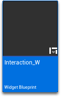
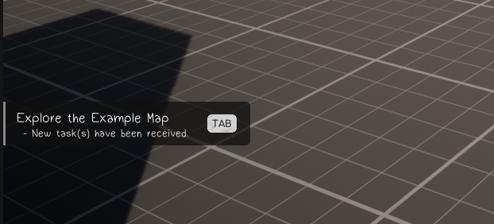

界面：菜单、按键提示与弹窗
统一菜单容器（UMC）把背包、日志、任务收进一个可导航的界面；按键提示会自动识别键鼠与手柄；弹窗通知负责告诉玩家“刚刚发生了什么”。
SF 的界面设计有一个明确目标：玩家用什么设备玩，提示就该长什么样。 所以它把“按键图标”做成了数据表，把“所有菜单”收进了一个容器，把“临时消息”做成了统一弹窗。 你改 UI 时，最好顺着它的规则来，否则很容易出现“手柄玩家看不到按键”的问题。
统一菜单容器（UMC）
UMC（Unified Menu Container）是 SF5 引入的核心 UI 结构：把背包、日志、回忆录、任务、设置 全部放进同一个可导航界面，玩家用肩键/方向键在标签之间切换，而不是打开五个不同的窗口。
这样做的好处很实际：
- 玩家不会在五个界面之间迷路；
- 你只需要维护一套导航逻辑；
- 新增一个“页面”只要往容器里加一个控件，并注册标签。
UMC 是游戏内（游玩中）的容器，装的是背包、日志这些叙事界面； SF Menu 是主菜单、暂停菜单这类“游戏外/全屏”的菜单体系。两者是两套东西，别混。
SF Menu：为什么还要自己一套菜单系统
虚幻自带的 UMG 导航对纯手柄支持并不完善。SF 作者自己写了一套“SF Menu”工作流， 目标是同一套菜单同时支持鼠标点、键盘选、手柄导航。
做 SF Menu 时要遵守的规则（官方列的）：
| 规则 | 原因 |
|---|---|
按钮必须是 MenuButton_W 类 | 这个类里已经写好了高亮、选中、手柄导航的响应 |
用 Create SF Menu / Remove SF Menu 创建与移除 | 保证菜单栈正确，焦点能回到上一层 |
| 按钮之间的导航要在每个按钮的细节面板手动设 | 虚幻不会自动推断“按下应该跳到哪个按钮” |
视口里同时只能有一个 MenuMaster_W | 多个会抢焦点 |
官方文档里明确写了：这套导航方案是“当前做法”，未来可能改用 CommonUI 插件重写。
所以如果你要做重度 UI 项目，心里要有“以后可能要迁移”的准备；做中小项目则完全够用。
按键提示：一个控件 + 一张表
屏幕上的“按 E 交互”不是一张图片，而是控件 InputKey_W 根据数据表 InputMap_DT
动态生成的——所以它能在你插上手柄的瞬间，从 “E” 变成 “A”。
-
把控件放到你的 UI 里
在任意 Widget 的编辑器里，从左侧面板搜
Input Key，拖进画布。 -
设置要显示哪个键
选中它，在细节面板里设
Keyboard/Gamepad Key、Text Size、Background Image Size。 -
在数据表里定义这个键的样式
打开
InputMap_DT，为这个键新增一行：Target Key、Key Display Name（显示的文字）、Key Use Icon（用图标代替文字，手柄键位常用）、General Key Background（背景图）。
因为样式来自数据表，你改一张背景图或字号，所有用到这个按键的界面都会跟着变。 这也是 SF 把按键做成数据驱动的最大好处——包括以后支持玩家自定义键位。
交互提示控件（Interaction_W）
这是玩家最常看到的 UI：物体名称 + 按键 + 可选图标。它会根据物体数据自动变化（详见第 3 章的提示一节）。
因为透明度被 SFInteractionWidget_SC 场景组件在运行时接管，编辑态故意设为 0。
临时把根节点 Render Opacity 改成 1 就能编辑，改完记得改回 0——否则运行时会出现“双重提示”。

弹窗通知：三行字的“刚刚发生了什么”
PopupMaster_W 提供 ShowCustomPopup，用于“物品已加入背包”“回忆录已更新”这类短消息。
| 参数 | 说明 |
|---|---|
Header | 标题（一句话） |
Description | 一句补充说明 |
Image | 右侧配图（道具图标最合适） |
Duration | 停留秒数（默认 3 秒，在函数内 Delay 节点里改） |
Display UMC Prompt | 把配图换成“打开菜单”的按键提示，暗示某个菜单里有新内容 |
用法：新建一个 PopupMaster_W 控件 → 调用 ShowCustomPopup → 加到视口。
不用担心内存泄漏——新弹窗出现时，控件会先移除所有旧弹窗。

Display UMC Prompt 的效果）。改 UI 的推荐顺序
- 先换配色与字体：改控件里的颜色与字体资产，不要动布局。
- 再换图标：
InputMap_DT里的按键图标、道具图标。 - 然后调整布局：位置、尺寸、留白。注意 16:9 与 21:9 都要看。
- 最后动结构：加页面、改导航。这一步最容易把 UMC 弄坏，建议先备份。
- 用 4 种输入方式各测一遍：鼠标、键盘、手柄、以及“手柄热插拔”。
字幕会自动根据画面比例调整垂直位置，但你自己做的 UI 不会。 如果你的项目要支持超宽屏，记得用锚点（Anchors）而不是固定坐标， 否则在 21:9 下元素会跑到奇怪的地方。
界面看完了，出门看看风景——相机与场景触发器。